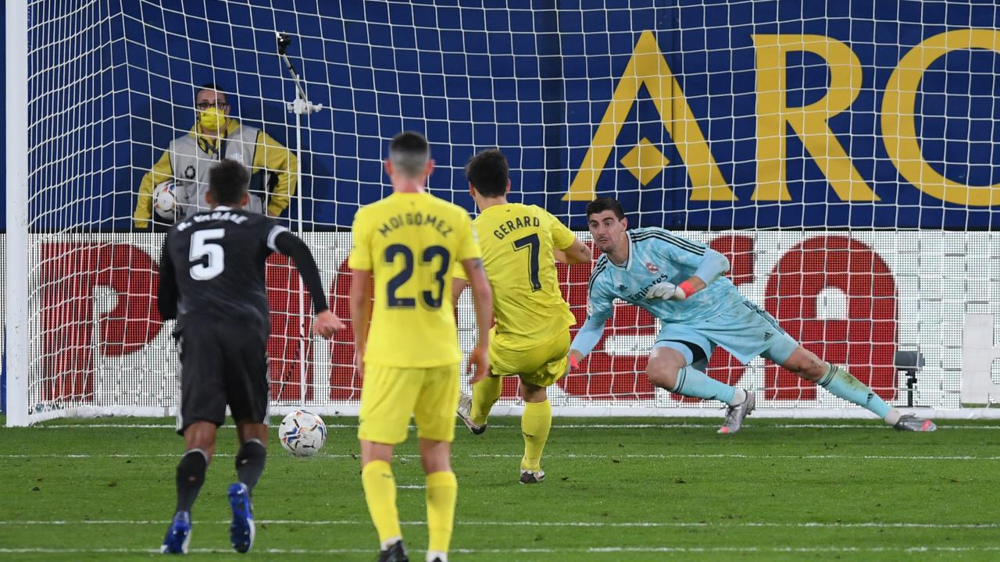

Final Score: Villarreal 1-1 Real Madrid
Goals from Mariano Diaz and Gerard Moreno were enough to secure a point for both sides in this top-of-the-table clash. Here are my five key takeaways from the match:
2. Real Madrid Performs Better Than Expected Without Sergio Ramos… and Benzema... and Casemiro
Historically, Real Madrid have been very poor when playing without Sergio Ramos, and the absences of Karim Benzema and Casemiro (as well as Fede Valverde, Eder Militao, and Luka Jovic) only lowered Madrid’s chances of winning this match. It was Nacho who partnered Rafael Varane in central defense against Villarreal, and both (surprisingly) put in solid shifts. The return of Dani Carvajal after his knee injury was also pivotal in this match. Real Madrid had been without an actual right back for over a month, and Carvajal’s presence gave Varane and Nacho some security on the right, something they didn’t have when Lucas Vazquez filled that role. I was very worried about how Toni Kroos and Luka Modric would perform without Casemiro, as they would both have to play much deeper as the team lacked a holding midfielder. The double-pivot with the two didn’t work well against Real Sociedad in the season opener, and Villarreal are arguably a better team in possession than the Basque side. In the end, it was a set of very good performances from both midfielders, and they (for the most part) stifled Villarreal’s attacks for the majority of the match.
3. Gerard Moreno Grabs His 5th Goal Of The Season
After his goal against Real Madrid, Gerard Moreno moved to second position in La Liga’s top scorer charts, only 1 goal behind Mikel Oyarazabal. He took his 76th minute penalty well, slotting it into the bottom left corner, putting it where Thibaut Courtois couldn’t possibly save it. Other than the penalty, it was a very good match from Moreno, as he had 3 non-penalty chances and created 1 chance for his side.

4. Unai Emery’s Villarreal Are Serious Title Contenders
The former PSG and Arsenal manager has drastically improved this Villarreal side. While he hasn’t increased the number of goals that they score per match or their expected goals rate, he has improved their play style. They have become even more press-resistant, and their passing is clean and crisp. They have the defensive capabilities to sit in and play a low block, and then hit teams on the counterattack. Emery has given this team a versatility that allows them to take advantage of each team that they play, proven by their record this season of 5-4-1. If they can keep performing at the level they are currently playing at on a consistent basis, they could take advantage of the slow starts that the bigger teams have had, and could solidify themselves as potential title contenders.
5. Villarreal Can Go Top Of La Liga With Win At Real Sociedad Next Weekend
Next weekend sees the top two teams in La Liga clash at Anoeta on Sunday. However, both teams will have played 10 matches at that time, the most of any team in La Liga, which does invalidate their league positions a bit. Nevertheless, it should be a great matchup, with both clubs looking for a win to solidify themselves as La Liga’s top team, and usurp Sevilla as the league’s “4th team” (as Real Madrid, Barcelona, and Atletico Madrid historically always take 3 of La Liga’s 4 Champions League spots). Real Sociedad faces Cadiz on Sunday, so Villarreal will have more momentum going into their clash, as they’re coming off a great performance against Real Madrid.